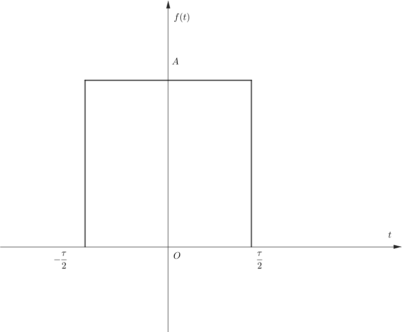
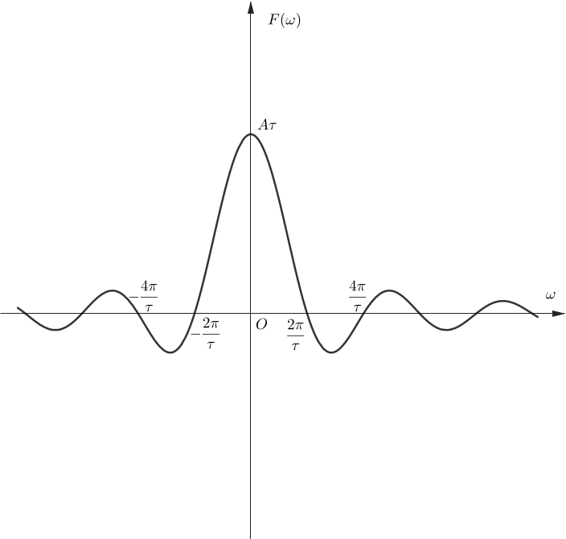

《信号与线性系统》这门课全程依赖电路知识，以《电路理论》初级篇为先导，其内容相当于电路理论中部分内容的详细拓展。这一篇笔记会记录我自己的一些观点和看法（专门记我看不懂的）。
一个系统存在着激励 $e(t)$ 和响应 $r(t)$。
一、系统具有的性质
线性性：一个系统具备线性性，其抽象表述为：若 $e(t)\rightarrow r(t)$，则 $k _1e _1(t)+k _2e _2(t)\rightarrow k _1r _1(t) +k _2r _2(t)$。
非时变性：一个系统具备非时变性（时不变性），其抽象表述为：若 $e(t)\rightarrow r(t)$，则 $e(t-t _0)\rightarrow r(t-t _0)$。
因果性：一个系统在 $t$ 时刻的响应，只和 $t$ 时刻及其之前的时刻的激励有关。
上面的三个性质中，因果性是最好判定的。只需看 $r(t)$ 的表达式即可。线性性也是好判定的，直接根据抽象定义，构造两个激励 $e _1(t)$ 和 $e _2(t)$ 并判断是否具有该性质即可。
关于时不变性的判定，可以构造两个激励 $e _1(t)$ 和 $e _2(t)$，其中 $e _2(t)$ 是 $e _1(t)$ 平移得到的，从而转化为判定：若 $e _1(t)\rightarrow r _1(t)$，是否有 $e _2(t)\rightarrow r _2(t)$。
关于时不变性的判定，举个例子：$r(t)=e(1-t)$。这是在习题中碰到的。这个系统是不具备时不变性的，可以按照下面的方式判定：
记 $e _1(t)\rightarrow e _1(1-t) = r _1(t)$，$e _2(t)=e _1(t-t _0)$。那么 $r _2(t)=e _2(1-t)=e _1(1-t-t _0)=r _1(t+t _0)\neq r _1(t-t _0)$。因此，若 $e(t)\rightarrow r(t)$，无法得到 $e(t-t _0)\rightarrow r(t-t _0)$。
之所以单独强调时不变性，是因为产生过一个莫名其妙的错误做法：
将原式中的 $t$ 换成 $t-t _0$ 可得 $r(t-t _0)=e(1-t+t _0)$，记作式 $(1)$。所以对于一个激励 $e(t-t _0)$，根据原式，它产生的响应应该是 $e(1-t+t _0)$，也即 $r(t-t _0)$。所以系统具备时不变性。
这种错误做法看起来有点像是循环论证，但是它却能够正确地判断 $r(t)=\varepsilon(t)e(t)$ 不具备时不变性。所以花了一个下午的时间总结出时不变性的正确判定方法，并且特意强调，以免以后再落入这个陷阱。
二、各种各样的响应
1.古典法
古典法依据微分方程的数学解形式来定义系统的不同响应。一个 $n$ 阶线性系统的微分方程可以用下面的式子来表示：
$$\cfrac{\mathrm d^nr}{\mathrm dt^n}+a _{n-1}\cfrac{\mathrm d^{n-1}r}{\mathrm dt^{n-1}}+\cdots+a _1\cfrac{\mathrm dr}{\mathrm dt}+a _0r=b _m\cfrac{\mathrm d^me}{\mathrm dt^m}+b _{m-1}\cfrac{\mathrm d^{m-1}e}{\mathrm dt^{m-1}}+b _1\cfrac{\mathrm de}{\mathrm dt}+b _0e\tag{1.1}$$
这个微分方程对应的齐次方程的通解（通过初值条件确定待定系数），被称作系统的自然响应（自由响应），记作 $r _h(t)$。微分方程对应的特解（也通过初值条件确定了待定系数）被称作系统的受迫响应，记作 $r _p(t)$。
2.近代时域分析法
近代的时域分析法就把响应分为零输入响应 $r _{zi}(t)$ 和零状态响应 $r _{zs}(t)$。这一点同电路理论中的概念。
这些响应与全响应 $r(t)$ 之间的关系是： $$r _h(t)=r _{zi}(t)+r _{zs}(t)=r _h(t)+r _p(t)\tag{1.2}$$
一、卷积积分
这一章首先证明了下面的公式：
$$f(t)=\int _0^tf(\tau)\delta(t-\tau)\mathrm d\tau=\int _{-\infty}^{+\infty}f(\tau)\delta(t-\tau)\mathrm d\tau\tag{2.1}$$
这说明一个信号可以分解成多个多个冲击性信号的积分。
记一个系统的单位冲击响应为 $h(t)$ ，即 $\delta(t)\rightarrow h(t)$。由于线性系统的时不变性、齐次性和叠加性，可得 $\displaystyle\int _0^te(t)\delta(t-\tau)\mathrm d\tau\rightarrow \int _0^te(t)h(t-\tau)\mathrm d\tau$。
因此，激励 $e(t)$ 时，系统的响应为
$$r(t) = \int _0^te(t)h(t-\tau)\mathrm d\tau\tag{2.2}$$
式 $(2.2)$ 就是卷积积分。
冲激响应是激励为 $\delta(t)$ 的零状态响应。如果可以知道一个系统的单位冲击响应 $h(t)$，根据式 $(2.2)$ 可以直接从激励得到响应，而不需要知道系统的其它细节。
二、卷积的性质
卷积运算是一种抽象出来的运算，它的定义是：
$$f(t) * g(t)=\int_{-\infty}^{+\infty}f(\tau)g(t-\tau)\mathrm d\tau\tag{2.3}$$
和很多运算类似，卷积具有交换律、对加减法的分配律以及结合律。对于卷积结果进行微积分运算，有下列结论成立： $$\cfrac{\mathrm d}{\mathrm dt}[u(t) * v(t)]=u(t) * \cfrac{\mathrm dv(t)}{\mathrm dt}=\cfrac{\mathrm du(t)}{\mathrm dt} * v(t)\tag{2.4}$$
$$\int_{-\infty}^t[u(x) * v(x)]\mathrm dx=u(t) * \left[\int_{-\infty}^tv(x)\mathrm dx\right]=\left[\int_{-\infty}^tu(x)\mathrm dx\right] * v(t)\tag{2.5}$$
上面的式子当然可以推广到多个函数卷积的导数/积分，以及卷积结果的多阶导数/积分。需要注意的是，$(2.4)$ 的使用没有限制条件，但是 $(2.5)$ 是不能随便使用的。这是因为在引入了奇异函数 $\varepsilon(t),\delta(t),\delta'(t)$ 等后，几乎所有的
式 $(2.5)$ 的使用前提是显然的，如果在使用 $(2.5)$ 时出现了类似于 $\displaystyle\int_{-\infty}^tx\mathrm dx$ 这种不收敛的反常积分，你一眼就知道不能这样做，自己的做法有问题。
比如使用 $(2.5)$ 的一半 $\displaystyle\int_{-\infty}^t[u(x) * v(x)]\mathrm dx=u(t) * \left[\int_{-\infty}^tv(x)\mathrm dx\right]$ 时，至少要保证 $\displaystyle\int_{-\infty}^t[u(x) * v(x)]\mathrm dx$ 和 $\displaystyle\int_{-\infty}^tv(x)\mathrm dx$ 都是存在的，而无需考虑 $\displaystyle\int_{-\infty}^tu(x)\mathrm dx$ 是否存在。
特别地，根据式子 $(2.4)(2.5)$，可以得到一个比较有用的结果： $$u(t) * v(t)=\cfrac{\mathrm du(t)}{\mathrm dt} * \int_{-\infty}^tv(x)\mathrm d x\tag{2.6}$$
上式还能互换 $u(t),v(t)$ 的地位，这里略去不写。式 $(2.6)$ 的使用条件是 $\displaystyle\int_{-\infty}^tv(x)\mathrm dx$ 存在，且
这是因为式 $(2.6)$ 可以看作是对式子 $u(t) * v(t)=u(t) * v(t)$ 两边分别运用 $(2.4)(2.5)$ 得到的，只不过等号右边选择了不同的函数进行操作。需要注意的是，左边在进行微分、积分后要能够得到原来的式子。如果先进行微分，那么： $$\int_{-\infty}^t\cfrac{\mathrm d[u(x) * v(x)]}{\mathrm dx}\mathrm dt=u(t) * v(t)-u(-\infty) * v(-\infty)\tag{2.7}$$ 显然只有满足 $\lim\limits_{x\rightarrow -\infty}u(t) * v(t)=0$，左边才能复原。如果先进行积分，那么首先就要保证 $\displaystyle\int_{-\infty}^t[u(x) * v(x)]\mathrm dx$ 存在，显然也需要满足 $\lim\limits_{x\rightarrow -\infty}u(t) * v(t)=0$，否则反常积分不收敛。
同时，有的地方说 $(2.6)$ 成立的条件是 $u(t)=\displaystyle\int_{-\infty}^tu'(x)\mathrm dx$，也就是 $\lim\limits_{x\rightarrow -\infty}u(x)=0$，这个条件是不准确的，至少其必要性不成立。
考虑 $u(t)=1+\varepsilon(t),v(t)=\left[\mathrm e^{-t}-\cfrac{1}{(t+1)^2}\right]\varepsilon(t)$，虽然不满足 $\lim\limits_{x\rightarrow -\infty}u(x)=0$，但是依然可以使用 $(2.6)$ 式： $$u(t) * v(t)=\delta(t) * \int_{-\infty}^t\left[\mathrm e^{-x}-\cfrac{1}{(x+1)^2}\right]\varepsilon(x)\mathrm dx=\varepsilon(t)\int_0^t\left[\mathrm e^{-x}-\cfrac{1}{(x+1)^2}\right]\mathrm dx=\left(\cfrac{1}{t+1}-\mathrm e^{-t}\right)\varepsilon(t)\tag{2.8}$$
除此之外，还有一个延时的性质：若 $f(t)=f _1(t) * f _2(t)$，则有 $f(t-t _1-t _2)=f _1(t-t _1) * f _2(t-t _2)$。
一、傅里叶级数
对于真实信号周期函数 $f(t)$ 来说，一般都可以分解为傅里叶级数：
$$f(t)=\cfrac{a _0}{2}+\sum _{n=1}^\infty(a _n\cos n\varOmega t+b _n\sin n\varOmega t)\tag{3.1}$$
根据 Dirichlet 条件，上式中的 “$=$” 写作 “$\sim$” 更严谨，因为可能会存在一些离散的点，等式左右两边在这些点上的取值不相等。但是毕竟是个别离散的点，工程上可以直接忽略，所以直接使用了 “$=$”。
其中，系数 $a _n,b _n$ 的求解公式是： $$\begin{cases}\displaystyle a _n=\cfrac{2}{T}\int _{t _1}^{t _1+T}f(t)\cos n\varOmega t\mathrm dt\\ \displaystyle b _n=\cfrac{2}{T}\int _{t _1}^{t _1+T}f(t)\sin n\varOmega t\mathrm dt\end{cases}\tag{3.2}$$
其中有 $T=2\pi/\varOmega$，是函数 $f(t)$ 的周期。显然，式 $(3.2)$ 也可以使用配角公式，写作式 $(3.3)$ 所示： $$f(t)=\cfrac{a _0}{2}+\sum _{n=1}^\infty A_n\cos(n\varOmega t+\varphi _n)\tag{3.3}$$
如果考虑到欧拉公式，使用复指数消去三角函数，就得到了 $f(t)$ 的指数傅里叶级数： $$f(t)=\cfrac{1}{2}\sum_{n=-\infty}^{+\infty}A _n\mathrm e^{\mathrm j(n\varOmega t+\varphi _n)}=\cfrac{1}{2}\sum _{n=-\infty}^{+\infty}\dot A _n\mathrm e^{\mathrm jn\varOmega t}\tag{3.4}$$
其中的 $A _n$ 和 $\varphi _n$ 和 $(3.3)$ 里面是一样的。同时 $(3.4)$ 中还满足 $A _n=A _{-n},\varphi _n=-\varphi _{-n}$。有的地方使用 $F _n$ 和 $\dot F _n$，它们分别有 $F _n=A _n/2$，$\dot F _n=\dot A _n/2$。
二、傅里叶变换及其性质
1.傅里叶变换
当周期函数的 $T$ 趋于无穷大时，这个函数就不再具备周期性，同时其傅里叶级数中 $k$ 次谐波和 $k+1$ 次谐波的频率差也趋于 $0$，离散的函数有向连续转变的趋势，级数和有向定积分转变的趋势。对比式 $(3.4)$，对于非周期函数 $f(t)$，有：
$$f(t)=\cfrac{1}{2\pi}\int _{-\infty}^{+\infty} F(\omega)\mathrm e^{\mathrm j\omega t}\mathrm d\omega\tag{3.5}$$
有的地方也把 $F(\omega)$ 写作 $F(\mathrm j\omega)$。
其中“系数” $F(\omega)$ 可以通过下式求得： $$F(\omega)=\int _{-\infty}^{+\infty}f(t)\mathrm e^{-\mathrm j\omega t}\mathrm dt\tag{3.6}$$
式 $(3.5)(3.6)$ 被统称为傅里叶变换式，$(3.6)$ 被称为正变换，也写作 $F(\omega)=\mathscr F\lbrace f(t)\rbrace $；$(3.5)$ 被称为反变换，也写作 $f(t)=\mathscr F^{-1}\lbrace F(\omega)\rbrace $。
特别地，
| 单矩形脉冲信号 $f(t)$ | 单矩形脉冲信号的傅里叶变换 $F(\omega)$ |
|  |  |
|---|
2.傅里叶变换的性质
傅里叶变换具有的性质有：
线性特性：$\mathscr F\lbrace af _1(t) +bf _2(t)\rbrace =a\mathscr F\lbrace f _1(t)\rbrace + b\mathscr F\lbrace f _2(t)\rbrace $。
延时特性：若 $f(t)\leftrightarrow F(\omega)$，则 $f(t-t _0)\leftrightarrow F(\omega)\mathrm e^{-\mathrm j\omega t _0}$。
移频特性：若 $f(t)\leftrightarrow F(\omega)$，则 $f(t)\mathrm e^{\mathrm j\omega _ct}\leftrightarrow F(\omega-\omega _c)$。特别的，由于余弦函数可以用复指数表示，因此也存在 $f(t)\cos\omega _ct\leftrightarrow \cfrac{1}{2}[F(\omega+\omega _c)+F(\omega-\omega _c)]$。
对称特性（非常有用）：若 $f(t)\leftrightarrow F(\omega)$，则 $F(t)\leftrightarrow 2\pi f(-\omega)$。
对称特性非常适合用于求已知反变换的函数的正变换。例如，抽样函数是单矩形脉冲函数的傅里叶变换，但是直接求抽样函数的傅里叶变换会比较困难。 $$\begin{aligned}\mathscr F\lbrace \mathrm{Sa}(t)\rbrace&=\int _{-\infty}^{+\infty}\mathrm{Sa}(t)\mathrm e^{-\mathrm j\omega t}\mathrm dt\\\\ &=2\int _{0}^{+\infty}\cfrac{\sin t}{t}\cos(\omega t)\\\\ &=\int _{0}^{+\infty}\cfrac{\sin(1+\omega) t+\sin(1-\omega)t}{t}\mathrm dt\end{aligned}\tag{3.7}$$ 根据狄利克雷积分： $$\int _0^{+\infty}\cfrac{\sin x}{x}\mathrm dx=\cfrac{\pi}{2}\tag{3.8}$$ 可得当 $-1< \omega< 1$ 时，$\mathscr F\lbrace\mathrm{Sa}(t)\rbrace=\pi$;当 $\omega > 1$ 或 $\omega < -1$ 时，$\mathscr F\lbrace\mathrm{Sa}(t)\rbrace=0$。即 $\mathscr F\lbrace\mathrm{Sa}(t)\rbrace\leftrightarrow \pi[\varepsilon(\omega+1)-\varepsilon(\omega-1)]$。
显然用对称特性会比直接计算快一些：令 $A=\cfrac{1}{2}$ 和 $\tau=2$，那么有： $$\cfrac{1}{2}[\varepsilon(t+1)-\varepsilon(t-1)]\leftrightarrow \mathrm{Sa}(\omega)\tag{3.8}$$ 根据对称特性有： $$\mathrm{Sa}(t)\leftrightarrow \pi[\varepsilon(-\omega+1)-\varepsilon(-\omega-1)]\tag{3.9}$$ 式 $(3.9)$ 和用狄利克雷积分获得的结果是一样的。
微分特性：分为时域上的微分和频域上的微分。若 $f(t)\leftrightarrow F(\omega)$，则有 $\cfrac{\mathrm d^nf(t)}{\mathrm dt^n}\leftrightarrow (\mathrm j\omega)^nF(\omega)$ 和 $(-\mathrm jt)^nf(t)\leftrightarrow \cfrac{\mathrm d^nF(\omega)}{\mathrm dt^n}$。
积分特性：分为时域上的积分和频域上的积分。若 $f(t)\leftrightarrow F(\omega)$，且不考虑 $t=0,\omega=0$ 时 $f(t),F(\omega)$ 的取值，则有 $\displaystyle\int _{-\infty}^t f(\tau)\mathrm d\tau\leftrightarrow \cfrac{1}{\mathrm j\omega}F(\omega)$ 和 $\displaystyle\cfrac{1}{-\mathrm jt}f(t)\leftrightarrow\int _{-\infty}^\omega F(\varOmega)\mathrm d\varOmega$。需要注意的是式中的积分都应该收敛。
卷积特性（非常重要）：
特性一：两个信号的卷积的傅里叶变换是它们分别傅里叶变换的乘积：$f _1(t) * f _2(t)\leftrightarrow \mathscr F\lbrace f _1(t)\rbrace\mathscr F\lbrace f _2(t)\rbrace$。
特性二：两个信号的乘积的傅里叶变换是它们分别傅里叶变换的卷积的 $\cfrac{1}{2\pi}$：$f _1(t)f _2(t)\leftrightarrow \cfrac{1}{2\pi}\mathscr F\lbrace f _1(t)\rbrace * \mathscr F\lbrace f _2(t)\rbrace$。这一结论可以由特性一和对称特性导出。
下面给出由特性一和对称特性导出特性二的过程。不妨记 $\mathscr F\lbrace g _1(t)\rbrace=G _1(\omega)$，$\mathscr F\lbrace g _2(t)\rbrace=G _2(\omega)$。由特性一，有 $g _1(t) * g _2(t)\leftrightarrow G _1(\omega)G _2(\omega)$。因此得到三个傅里叶变换关系： $$\begin{cases}g _1(t)\leftrightarrow G _1(\omega)\\\\ g _2(t)\leftrightarrow G _2(\omega)\\\\ g _1(t) * g _2(t)\leftrightarrow G _1(\omega)G _2(\omega)\end{cases}\tag{3.10}$$ 根据对称特性，有： $$\begin{cases}G _1(t)\leftrightarrow 2\pi g _1(-\omega)\\\\ G _2(t)\leftrightarrow 2\pi g _2(-\omega)\\\\ G _1(t)G _2(t)\leftrightarrow 2\pi g _1(-\omega) * g _2(-\omega)\end{cases}\tag{3.11}$$ 由 $(3.11)$ 前两式可得 $\mathscr F\lbrace G _1(t)\rbrace=2\pi g _1(-\omega)$，$\mathscr F\lbrace G _2(t)\rbrace=2\pi g _2(-\omega)$。代入第三式即得： $$G _1(t)G _2(t)\leftrightarrow \cfrac{1}{2\pi}\mathscr F\lbrace G _1(t)\rbrace * \mathscr F\lbrace G _2(t)\rbrace\tag{3.12}$$
这一章是运用傅里叶变换将信号在时域上的分析转移到频域。相比于拉普拉斯变换，傅里叶变换
通过对傅里叶变换只能求解系统的零状态响应，说明它无法考虑系统的初值条件。一个很关键的原因就是，很多激励函数的傅里叶变换都是不存在的；另一个关键原因就是傅里叶变换考虑了 $t < 0$ 的时间域。式 $(3.6)$ 中我们可以感性地看到，当 $t\rightarrow -\infty$ 时，复变量 $\mathrm e^{-\mathrm j\omega t}$ 会不停地在复平面旋转；如果 $f(t)$ 是实信号，只有 $\lim\limits _{t\rightarrow -\infty}f(t)=0$，反常积分才可能收敛，傅里叶变换 $F(\omega)$ 才有可能存在。
由于我们在频域求解时，对 $r(t)$ 进行了傅里叶变换，其前提就是傅里叶变换存在，因而有 $\lim\limits _{t\rightarrow -\infty}r(t)=0$，即系统无初始储能。
基于相同的原因，双边拉普拉斯变换应该也存在只能求解零状态响应的问题；但是单边拉普拉斯变换因为积分下限是 $0$，$\mathrm e^{-st}$ 中的 $s$ 就不会跑到负无穷那边去，因而不需要条件 $\lim\limits _{t\rightarrow -\infty}f(t)=0$。
一、频率分析方法
1.频率响应函数
频率响应函数 $H(\omega)$ 描述了系统对特定频率的激励的响应特征。一方面，根据系统 $r(t)$ 与 $e(t)$ 的微分方程，经过傅里叶变换后得到频域的方程，从而定义频率响应函数：
$$H(\omega)=\cfrac{R(\omega)}{E(\omega)}\tag{4.1}$$
若已知 $E(\omega)$，可以直接与频响函数相乘得 $R(\omega)$。另一方面，根据 $(2.2)$ 的卷积式也能得到 $R(\omega)=H(\omega)E(\omega)$，从而发现频响函数是冲激响应的傅里叶变换，即 $h(t)\leftrightarrow H(\omega)$。
2.利用频响函数进行频域分析
对于给定的激励信号 $e(t)$，可以按照下面的步骤，在频域求响应 $r(t)$：
(1) 对 $e(t)$ 傅里叶变换得 $E(\omega)$。
(2) 设法得到频响函数 $H(\omega)$，求 $R(\omega)=H(\omega)E(\omega)$。
(3) 对 $R(\omega)$ 反变换得 $r(t)$。
上面的方法都是要用傅里叶变换的，一般都是用上面的方法。但是如果遇到了周期信号，特别是正弦信号，可以不用傅里叶变换就求出系统的响应；这其实就是电路理论里面的相量法解正弦稳态电路。这种方法的核心思想就是：若 $e(t)=A\cos(\omega t+\varphi)$，则 $r(t)=A|H(\omega)|\cos(wt+\varphi+\varphi(\omega))$。其中 $H(\omega)=|H(\omega)|\varphi(\omega)$。
对此书上有一个例子。我们仍然用 $\dot E=E\angle\varphi$（相量）记 $E\mathrm e^{\mathrm j(\omega t+\varphi)}$，对于 $H(\omega)$ 就记成 $|H(\omega)|\angle\varphi(\omega)$。当激励为 $e(t)=2+2\cos t+2\cos 2t$ 时，将其分成三个相量 $\dot E _0=2$，$\dot E _1=2\angle 0^\circ$，$\dot E _2=2\angle 0^\circ$。如果通过一些别的手段能够得到 $H(0)=2\angle 0^\circ$，$H(1)=1\angle-\mathrm j90^\circ$，$H(2)=0\angle 0^\circ$，就能够分别得到 $\dot R _0=4\angle 0^\circ$，$\dot R _1=2\angle -\mathrm j90^\circ$，$\dot R _2=0\angle 0^\circ$。转换成时域并合并，就有 $r(t)=4+2\cos\left(t-\cfrac{\pi}{2}\right)=4+2\sin t$。
二、理想低通滤波器的冲激响应与阶跃响应
归一化理想低筒滤波器的频响函数 $H(\omega)$ 满足 $|H(\omega)|=\varepsilon(t+\omega _{c0})-\varepsilon(t-\omega _{c0})$，$\varphi(\omega)=-\omega t _0$。它禁止一切频率高于 $\omega _{c0}$ 的分量通过，对于频率小于 $\omega _{c0}$ 的分量，会延时 $t _0$ 时间。这非常符合人们对理想滤波器的构想，既实现了滤波，又考虑了物理上不可忽略的延时因素。
通过对这个频响函数进行分析，即傅里叶反变换，我们可以求出单位冲击响应 $h(t)$，也可以用其他方法求出单位阶跃响应。两个响应的图像都很符合我们的预期，但是并不完全符合，因为图象总是会有抖动。同时，我们发现能够确定 $t<0$ 对应响应的值，而冲激响应只在 $t=0$ 作用，阶跃响应只在 $t>0$ 作用，因而理想滤波器不满足因果律，是不可实现的。
$\boxed{\mathrm{To\ Be\ Continued}}$